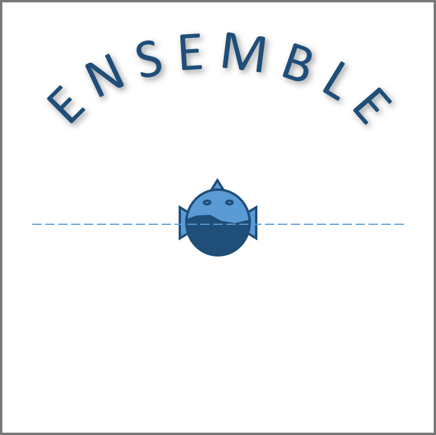
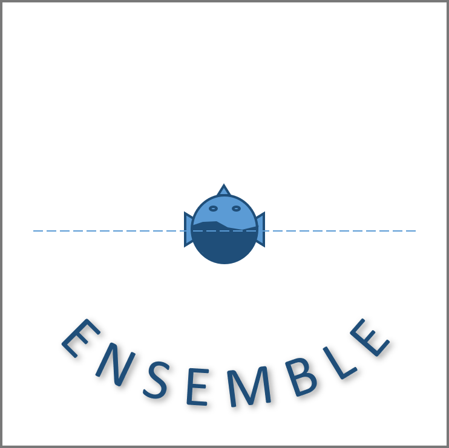
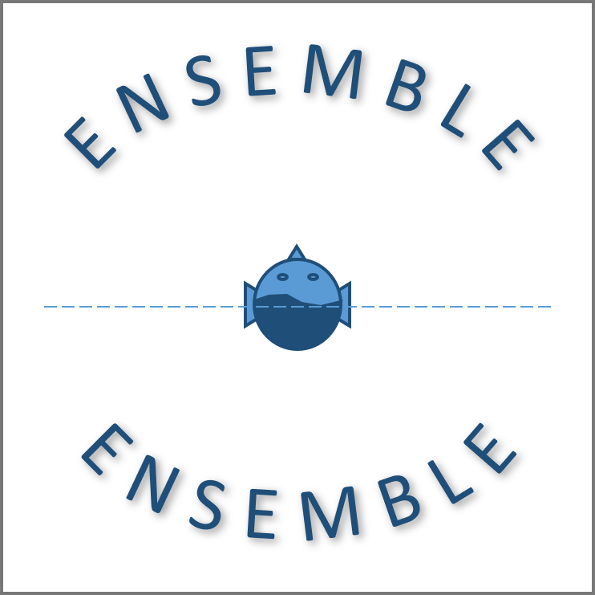

Front scene where an ensemble of musicians is located in front of a listener

Back scene where an ensemble of musicians is located at the back of a listener

All-around scene with an ensemble being both in front and at the back of a listener